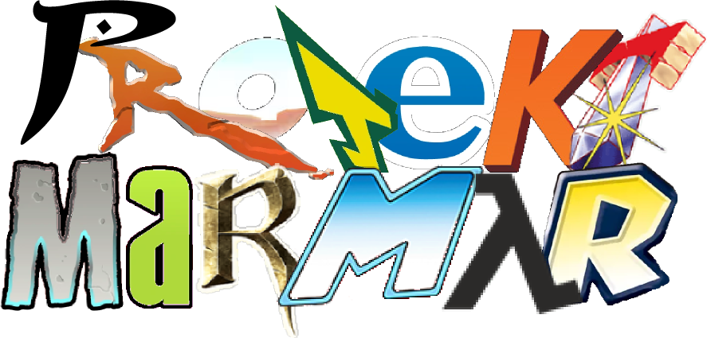

Der MarMar
MarMar steht für "Marathon-Marathon" und bedeutet, einen Marathon aller Gaming-Marathons zu spielen.
Mit einem Gaming-Marathon ist das 100%-Durchspielen aller Spiele eines bestimmten Franchises gemeint.
Demnach spielen wir beispielsweise zuerst alle Metroid-Games zu 100% durch und danach geht es mit allen
2D Mario-Games weiter.
Eine Liste aller Franchises, die aktuell geplant sind, findest du unter "Games".